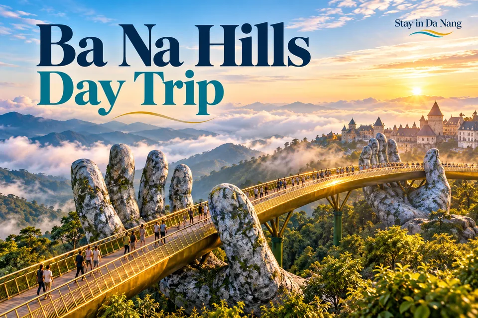

Ba Na Hills Day Trip · เคล็ดลับ
คู่มือเวียดนาม: ที่พัก เส้นทาง อาหาร และประสบการณ์ท่องเที่ยว

เปิด / ดาวน์โหลดภาพ HD · PNG →WebP →


Planning idea · English
A mountain escape near Da Nang, known for its Golden Bridge and cable car experience. Check ticket inclusions, transport and weather before your visit. Confirm ticket scope, pickup, travel time and operating notices. Mountain conditions can affect plans; check the short-range forecast and provider policies.
เคล็ดลับ
คู่มือนี้ให้คำแนะนำทั่วไป ไม่ใช่รีวิวจากประสบการณ์ตรงหรือข้อเสนอแบบเรียลไทม์ ตรวจสอบกฎเข้าประเทศ อากาศ เวลาเปิด จำนวนที่ว่าง และราคากับแหล่งทางการหรือผู้ให้บริการก่อนเดินทาง